Gutter condition
Review loose, damaged or leaking sections.
ST ROOFING / GUTTERS
5-inch and 6-inch gutters in a range of colors. Explore our installation work below, featuring white and black gutters, downspouts and gutter guards.
Gutters and downspouts direct runoff from the roof. Their condition, connections and discharge points matter when planning repairs or replacement.
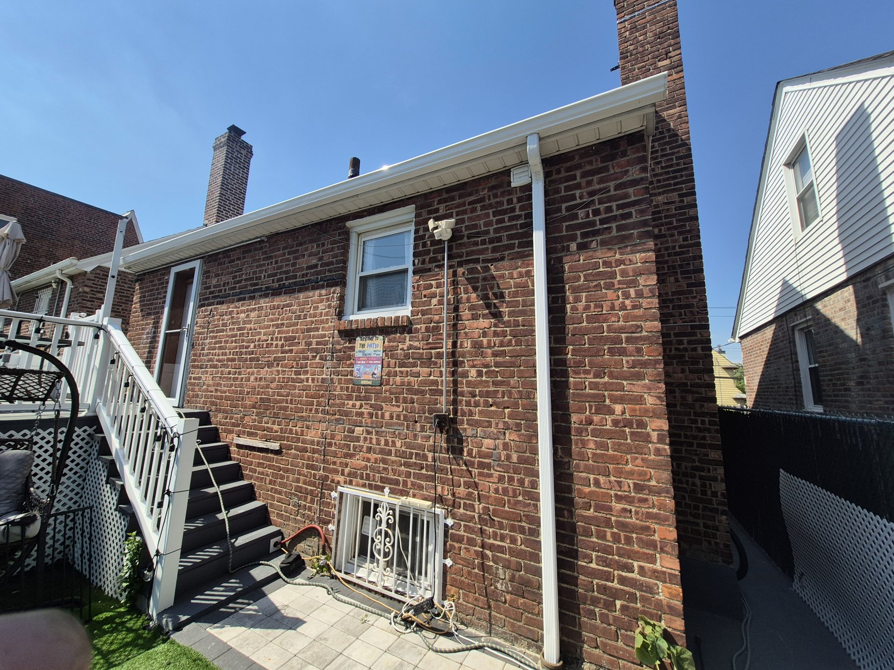
YOUR PROJECT, EXPLAINED
Review loose, damaged or leaking sections.
Discuss downspouts and where roof runoff is discharged.
Review the scope and materials for the affected sections or a new installation.
OUR WORK / WHITE & BLACK
From fastening the supports to completed gutter runs, downspouts and leaf guards: real details from our projects. Contact us to discuss repairs, replacement, color options and the right 5-inch or 6-inch size for your property.
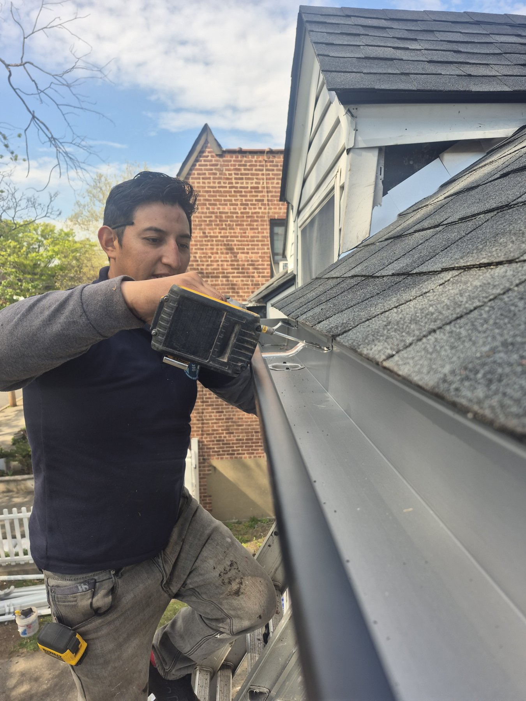
The installer secures an internal hanger along the roof edge.
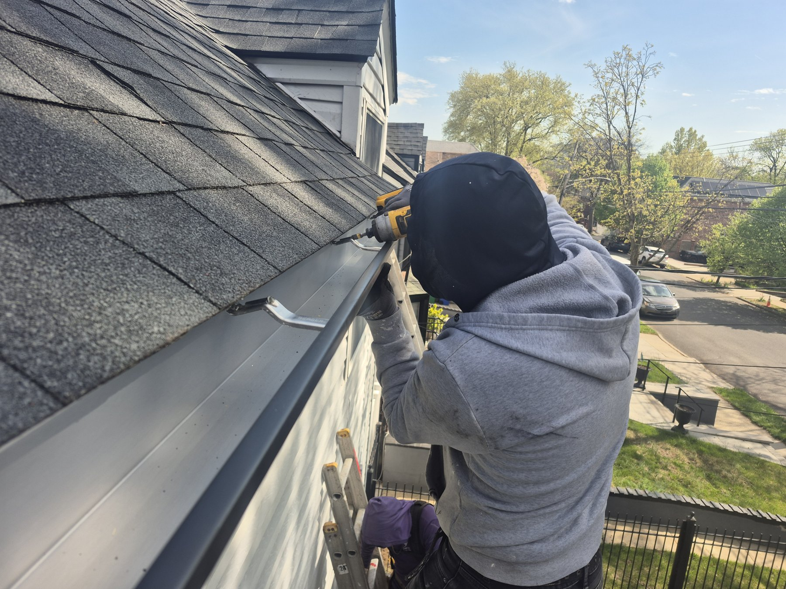
Another view of the crew fastening the gutter supports during installation.
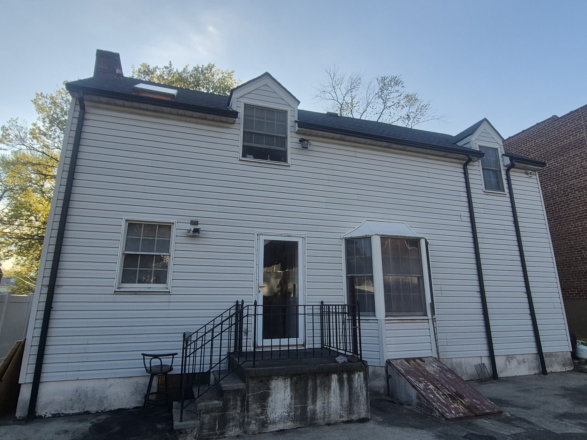
The rear elevation shows black gutters and matching downspouts against white siding.
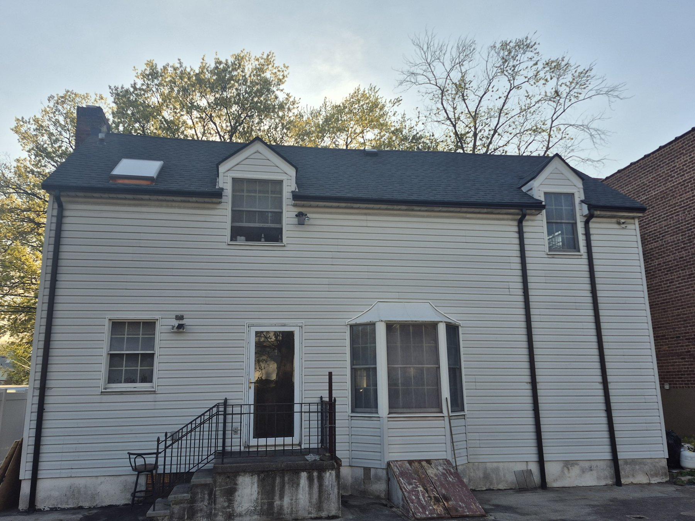
A wider view shows the gutter sections and downspout connections around the dormers.
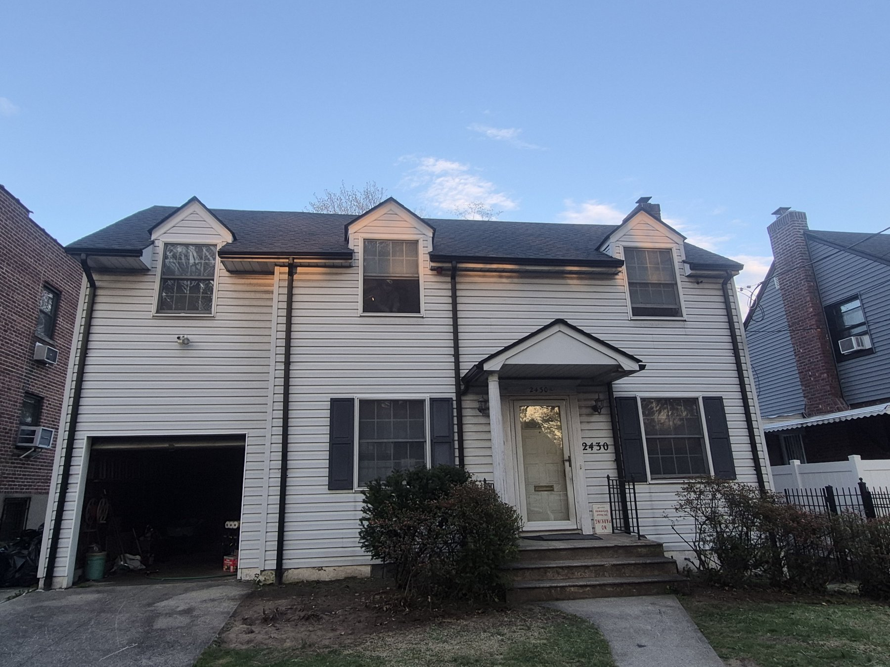
Black gutters and vertical downspouts follow the front roofline.
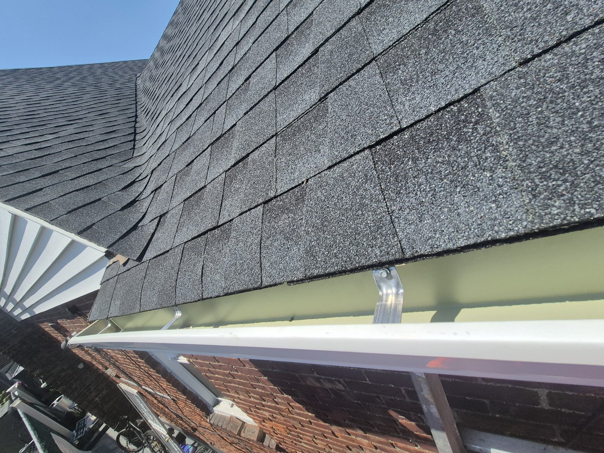
The open gutter shows the internal hangers beneath the shingle roof edge.
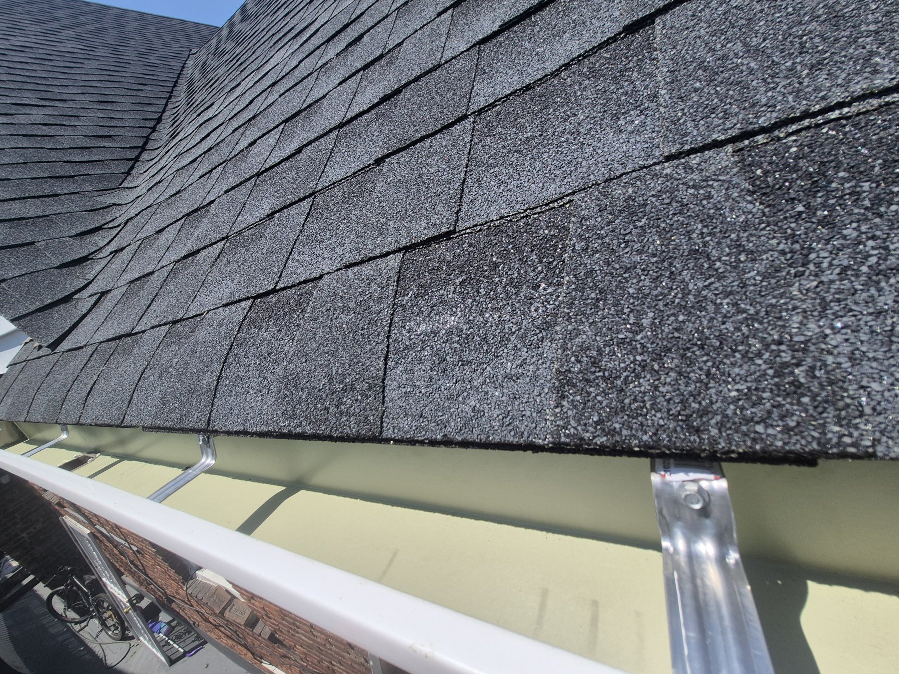
A second angle shows the gutter interior and attachment points.
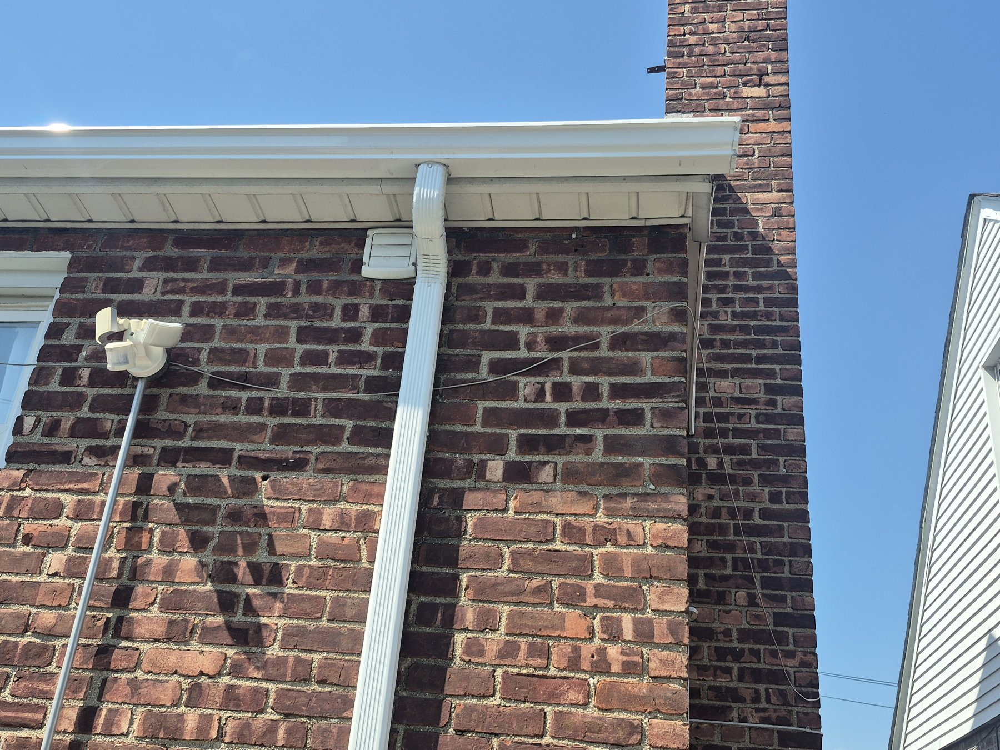
The white gutter connects to the downspout through offset elbows at the eave.
A wider view shows the white gutter run and downspout along the brick exterior.
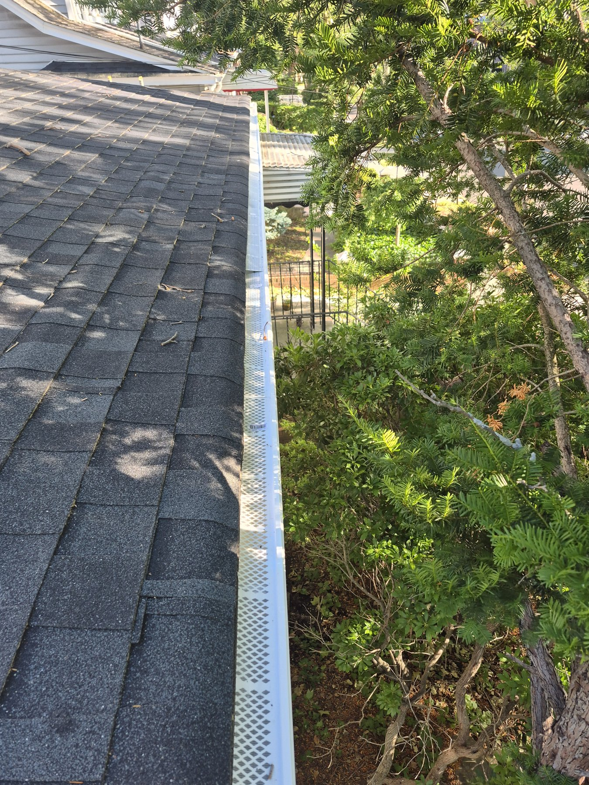
Perforated guards cover the gutter beside nearby trees.
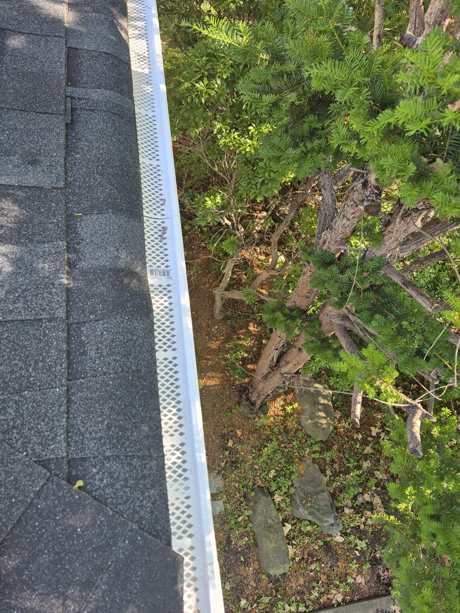
A closer view shows the guard panels along the gutter. Periodic inspection and cleaning remain part of maintenance.
Have your property location, photos and a short description ready. The estimate should explain the agreed scope, materials and any exclusions. Ask us about project timing and any applicable warranty for your specific work.
START WITH A CONVERSATION
Share your location, what needs attention and any photos you have.